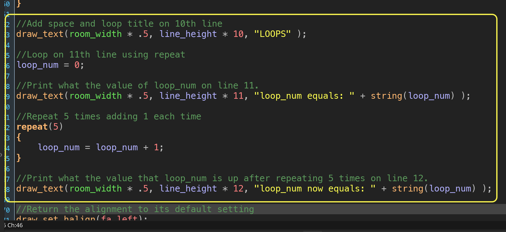
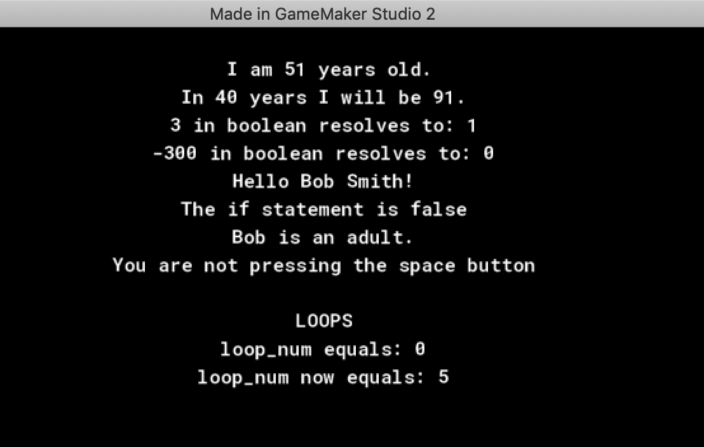
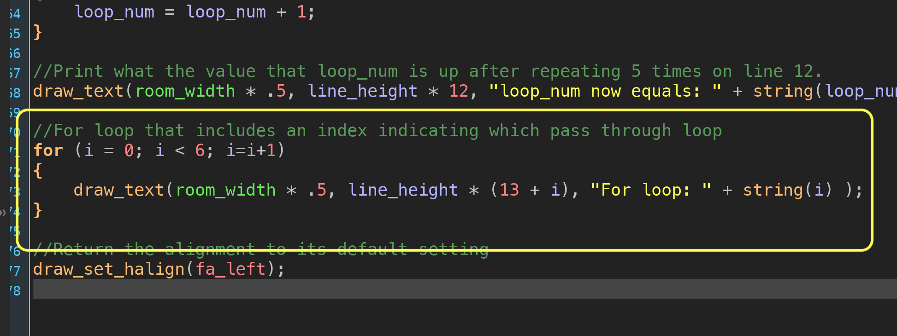
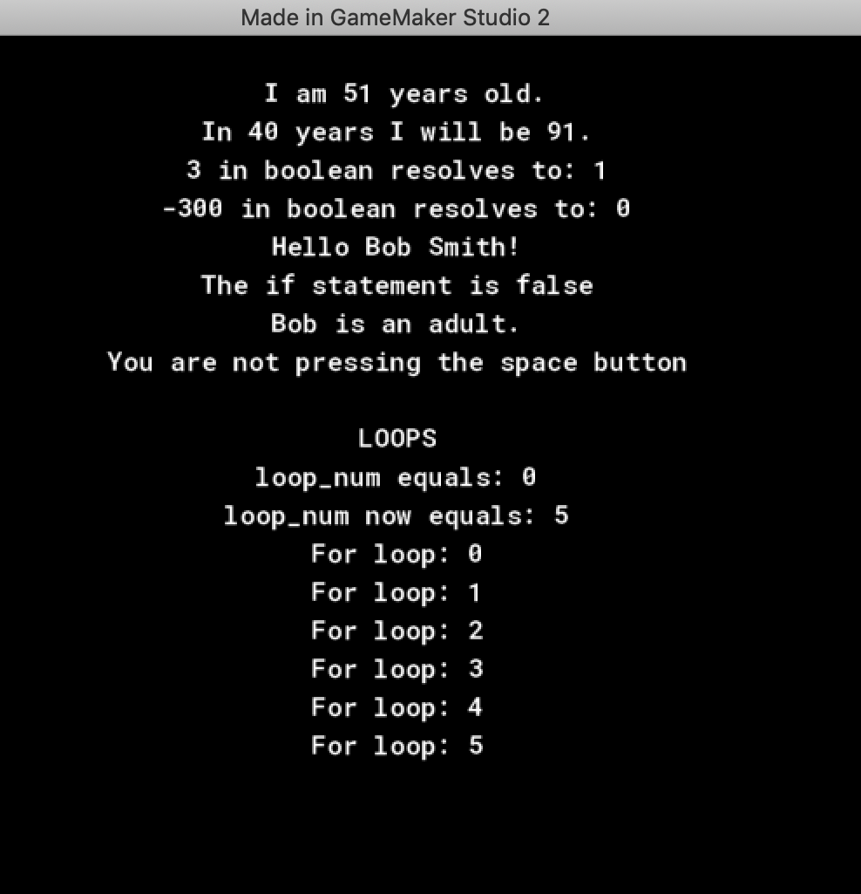

If you want to see tutorial in a separate web browswer window click here.
Loops
We will look at one more programming concept and it is loops. A loop repeats itself a given number of times within one frame to perform an operation. In a game we might be looping through all enemies to see which is closest to the player to auto aim a reticule. We will look at two loops supported in GameMaker. The first is repeat.
So lets look at programming a loop to see what it does. Lets create a list of what we want to do in this next portion of our script:
- Skip a line
- Add a title
- Add a variable called loop_num
- Print value of loop_num under title
- Add a repeat(5) loop which runs what is inside the brackets five times
- Add 1 each time the loop runs to the loop_num variable
- Print value of loop_num after it runs through the loop

Run the game again by pressing the  Play Button in the top menu bar to launch the game. Notice that all the items in our list are addressed. Most importantly we can see that loop_num goes from 0 to 5 proving that the loop ran 5 times.
Play Button in the top menu bar to launch the game. Notice that all the items in our list are addressed. Most importantly we can see that loop_num goes from 0 to 5 proving that the loop ran 5 times.

Sometimes we need to access a value of where in the loop we are at. Other times we sometimes don't know how many times we need to loop (go through each enemy still alive in level). There is another type of loop that you can use called a for loop. A for loop looks a bit more complicated:
- Starts with an initial value (often starts at 0 but doesn't have to)
- Condition that when it is still true will keep looping (exit condition)
- Do this after a pass through the loop
These three items are separated by a ; (semi-colon). Add the following script:

These above creates a new variable called i. It exits the loop when i gets to 6 or above. After each time through the loop i is incremented by 1. We use the index value i to add spacing to the text as we will be adding 5 lines.
Run the game again by pressing the  Play Button. We should see 5 lines printing the value of the index i.
Play Button. We should see 5 lines printing the value of the index i.

Next up we will look at how to position objects in the game window.